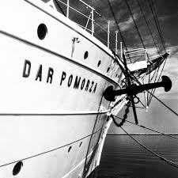

.jpg "komórka1")
Odrabiam lab1
|
|  |
Obecnie Gdynia ma ponad 250 tys. mieszkańców, jest nowoczesnym ośrodkiem gospodarki morskiej, handlu międzynarodowego, nauki i szkolnictwa wyższego, kultury i turystyki.
Jest chętnie przytaczanym przykładem miasta sukcesu, miasta ludzi przedsiębiorczych, aktywnych i odważnych.
Te marzenia towarzyszą nam także dzisiaj, gdy myślimy o przyszłości Gdyni.
Świat po opadnięciu "żelaznej kurtyny" jest w zasięgu naszych rąk, lecz nam zależy byśmy w pełni i jak najszybciej stali się jego integralną częścią.
Gdynia dzięki swemu położeniu geopolitycznemu aspiruje do roli ośrodka międzynarodowych spotkań i wymiany handlowej.
To ambitna kontynuacja niegdysiejszych marzeń Eugeniusza Kwiatkowskiego.